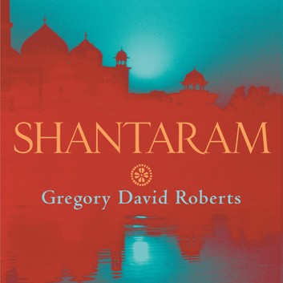
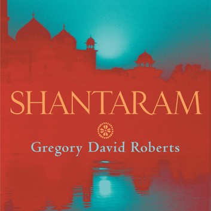

Истина в том, что нет хороших или плохих людей. Добро и зло не в людях, а в их поступках. Люди остаются просто людьми, а с добром или злом их связывает то, что они делают – или отказываются делать.
Грегори Дэвид Робертс "Шантарам"
 
